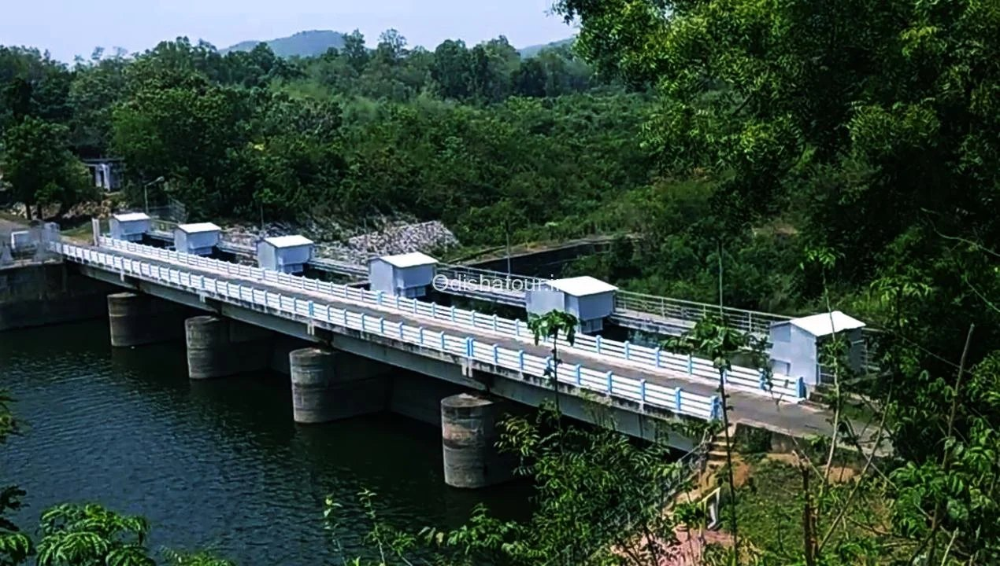

Blue hills around a still reservoir
Kuanria, a picturesque getaway about 50 km from Nayagarh, is a huge reservoir flanked by blue hillocks, with a dam about 1.5 km long. It is one of the district’s most photographed spots and a favourite for family picnics.
The dam is built across the Kuanria river, a tributary of the Mahanadi that meets the larger river near Kantilo. Its water supports irrigation in the surrounding farmland, especially for the winter (rabi) crop.
Visitors come for the long white-railed bridge over deep green water, the forested hills on every side and the birdlife — herons, egrets and kingfishers are among the birds reported here.

Winter, from November to February, is the most comfortable season, and the hills are greenest just after the monsoon. April and May are hot, so plan to be there early in the morning or near sunset.
Daspalla is the nearest town. Kuanria combines easily with Kantilo and Daspalla in a single day trip by road from Nayagarh. Bring water and snacks, as facilities nearby are limited.
Tap a photo to see it bigger.